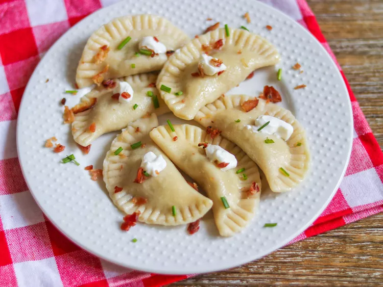

Main Page
Pierogi

What Is Pierogi
Varenyky (perogies) These half moons of dough may be filled with a variety
of fruits, vegetables,
meats and cheeses, although for Christmas Eve potato and cabbage fillings
are the favorite.
Varenyky Ingredients
Dough:
- 5 cups all-purpose flour
- 1 teaspoon salt
- 2 tablespoons butter, softened
- 1 cup evaporated milk
- ½ cup water
Filling:
- 6 medium potatoes, cut into small cubes
- 2 large onions, finely chopped
- ½ cup butter
- 1 cup shredded Cheddar cheese
- salt and pepper to taste
How to Make Pierogi
-
To make the dough, combine the flour and salt in a large bowl. Make a
well in the center and add the soft butter and evaporated milk;
stir gently until all the liquid is absorbed. Add water only as needed,
kneading continuously until dough sticks together.
Place dough into a greased bowl, turn to coat, and let rest for 30
minutes.
-
To make the potato filling, place potatoes into a saucepan with water to
cover. Bring to a boil and cook until tender, about 10 minutes.
Drain and set aside. Melt 1/2 cup butter in a medium skillet, over
medium heat. Saute onions in butter until tender.
Mix the onions into the potatoes along with the cheese and season with
salt and pepper to taste.
-
Remove the dough from the bowl onto a lightly floured surface. Roll out
to 1/8 inch in thickness.
Cut into 3 inch circles. Place one tablespoon of filling onto one side
of the circle.
Fold the other half over and press the edges to seal. Place finished
dumplings onto a floured tray and keep covered.
-
Bring a large pot of water to a boil. Drop 10 or so dumplings into the
water at a time. Cook for 3 to 5 minutes,
then remove to a colander to drain. Place finished dumplings onto a
lightly oiled dish and turn them to coat with a thin layer.
This will keep them from sticking together. Serve dumplings with fried
onions and sour cream.
Cooled dumplings also can be fried in oil and butter for a nice crispy
surface.